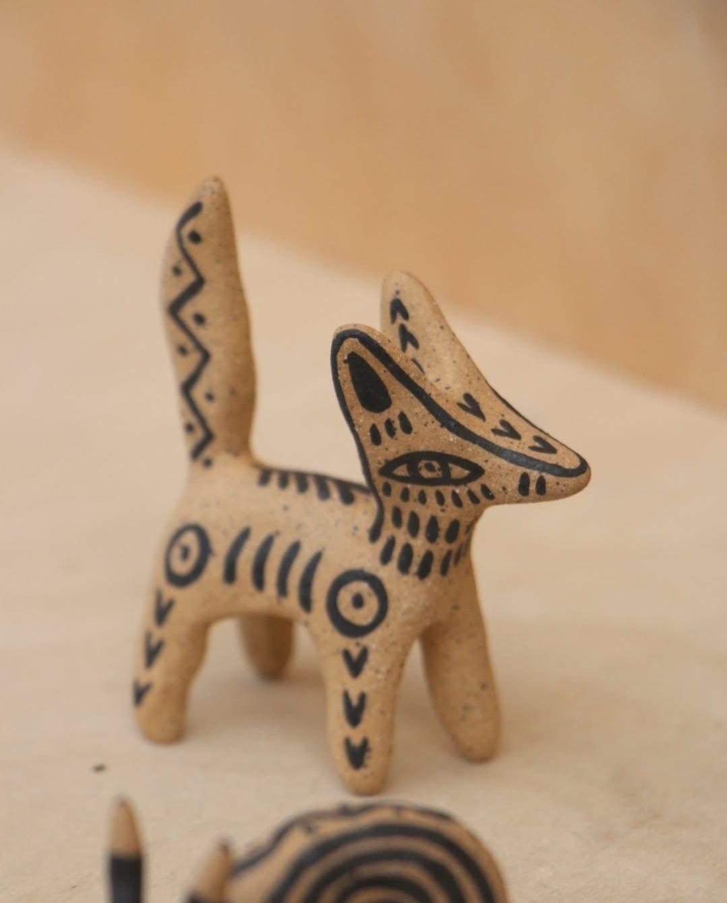

Pin2Brand Visual Identity Kit
COYOTE BURGUER
Visual identity compiled from 5 references in 'COYOTE BURGUER'. Defined by artisanal desert folk & handcrafted street-food identity, tactile_organic surfaces (grain 28.49), and a warm CIELAB palette (53.32% earth tones).
#wolf
#starlight
#graphicdesign
#coyote
#terracotta-earth
#desert-craft
#cobalt-slate-contrast
#tactile-mineral-grain

Color System (Click HEX to Copy • Pick Color to Live-Tune)
#342A2A
#C4B5A6
#262320
#C4B5A6
#C4BBB0
#B13B29
#6896D8
#D97706
#15803D
Live Typography & UI Playground
Display & Heading
Fraunces
Section: Bebas Neue
Body (Plus Jakarta Sans): Warm humanoid geometric sans that remains crisp over stone, clay, and cream surfaces.
Sample Component Card
Signature Product Tile
Styled with 2px solid #B13B29 and shadow 4px 4px 0px #14110F.
$14.50
Generative AI Prompts (Midjourney / Flux / Imagen)
Hero Photography Template:
Artisanal Southwest desert folk art direction, raw terracotta clay and cobalt pigment, hand-printed linocut & ceramic texture, signature hero shot on raw sandstone & handcrafted ceramic tableware, warm directional lighting, anchored in #342A2A earth, #B13B29 burnt terracotta, and #6896D8 cobalt slate, tactile sandstone grain, natural warm studio lighting
Mascot / Brand Illustration Template:
Artisanal Southwest desert folk art direction, raw terracotta clay and cobalt pigment, hand-printed linocut & ceramic texture, folk-art mascot illustration, bold block-print terracotta and cobalt linework, distressed ink stamp feel, anchored in #342A2A earth, #B13B29 burnt terracotta, and #6896D8 cobalt slate, tactile sandstone grain, natural warm studio lighting
Negative Prompt:
modern corporate SaaS UI, glossy plastic 3D render, cyberpunk neon, sterile white background, generic stock clipart
Board Contact Sheet